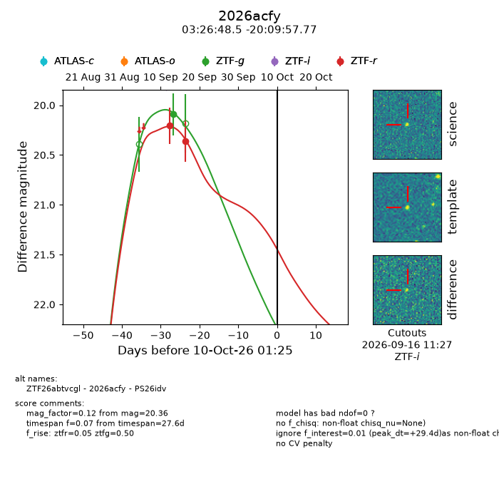
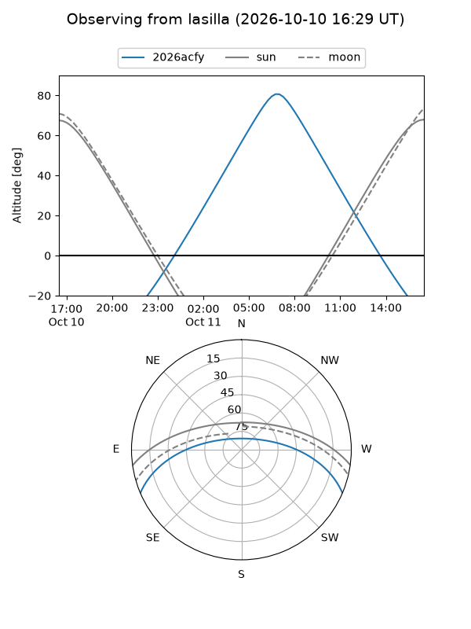
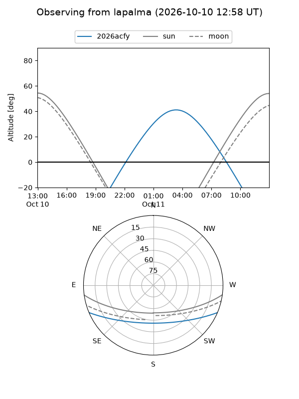
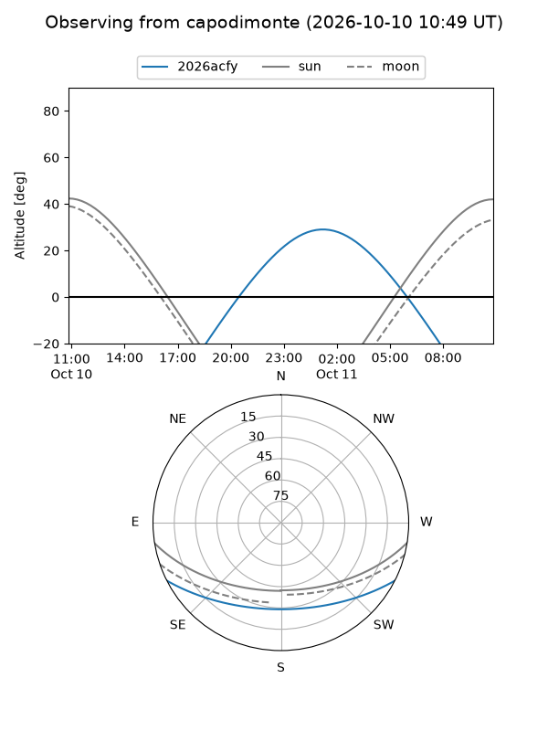
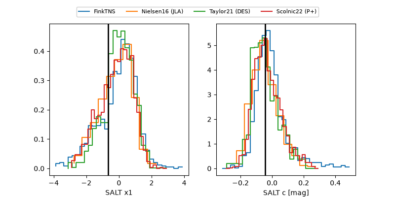

2026acfy
Target 2026acfy at 2026-10-10 13:26
Aliases and brokers:
FINK-ZTF: ztf.fink-portal.org/ZTF26abtvcgl
Lasair-ZTF: lasair-ztf.lsst.ac.uk/objects/ZTF26abtvcgl
ALeRCE-ZTF: alerce.online/object/ZTF26abtvcgl
YSE-PZ: ziggy.ucolick.org/yse/transient_detail/2026acfy
TNS name: wis-tns.org/object/2026acfy
Direct TNS query: direct search
alt names
ZTF26abtvcgl (ztf,fink_ztf)
2026acfy (tns,yse)
PS26idv (panstarrs)
Coordinates:
equatorial (ra, dec) = 51.7020,-20.16605
equatorial (HMS+DMS) = 03:26:48.47,-20:09:57.77
galactic (l, b) = (210.3483,-53.89034)
Flags:
peak dt: +29.9
Photometry:
last ztfg=20.09, ztfr=20.36
1 ztfg, 2 ztfr detections
Lightcurve

Visibility



Additional plots
